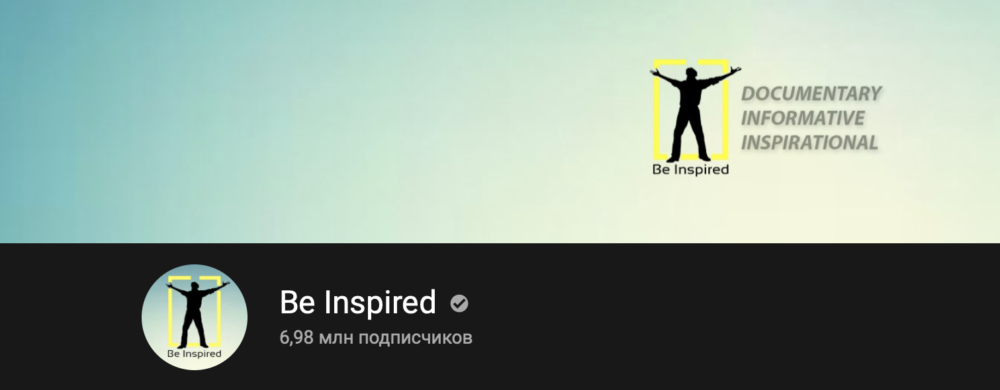

TOP 6 motivational podcasts
1. TEDx Talks
TED is a global community, welcoming people from every discipline and culture who seek a deeper understanding of the world. We believe passionately in the power of ideas to change attitudes, lives and, ultimately, the world. On TED.com, we're building a clearinghouse of free knowledge from the world's most inspired thinkers — and a community of curious souls to engage with ideas and each other, both online and at TED and TEDx events around the world, all year long.
2. Be Inspired
An open-minded channel for those who are seeking knowledge.
3. Motivation2Study
"Our mission is to inspire, educate and help students of all ages with both lack of motivation and mental health awareness. We work with motivational speakers to create life changing motivational videos to help us achieve this goal."
4. Matt D'Avella
Minimalism, filmmaking, creativity. These three words descibe Matt D'Avella the best. This young guy won't let you get bored and discouraged. His energy charge is enough for both. He likes to test his willpower by various challenges and believe me or not you will definitely crave to plunge into this fascinating world of challenges to become stronger or just to have fun.
5. Master Sri Akarshana
Spiritual Master, Speaker, Author and Philanthropist. Relax & grow.
6. Video Advice
This channel is about improving people's lives trough motivation, inspiration and education, from the high achievers of the world.
"That some achieve great success, is proof to all that others can achieve it as well." – Abraham Lincoln.